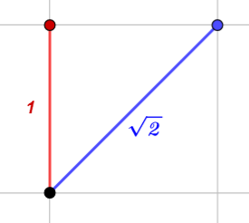
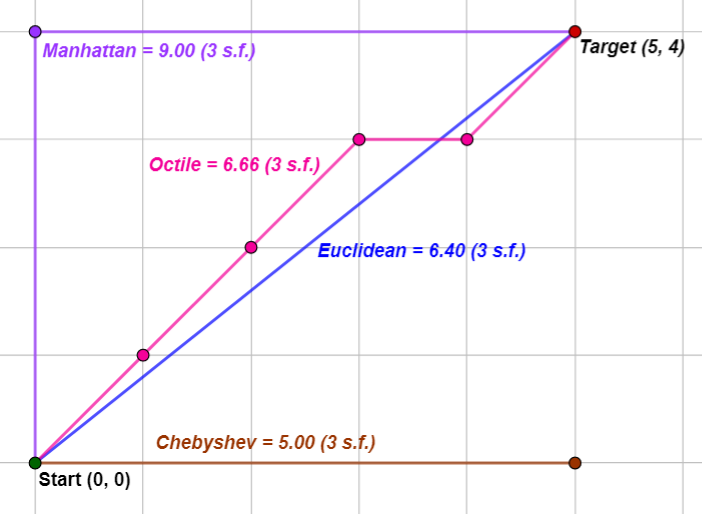
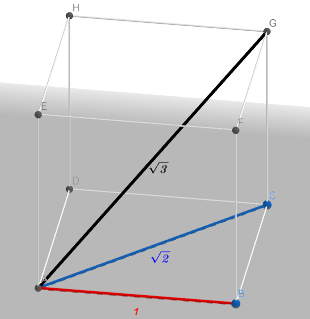

Notes
Data Strcuture & Algorithms
Asymptotic Analysis
Asymptotic analysis of an algorithm refers to defining the mathematical boundation/framing of its run-time performance. Using asymptotic analysis, we can very well conclude the best case, average case, and worst case scenario of an algorithm.
Asymptotic analysis is input bound i.e., if there's no input to the algorithm, it is concluded to work in a constant time. Other than the "input" all other factors are considered constant.
Asymptotic notations:
- Big-O notation (\(O\)) (Worst Case)
- Little-o notation (\(o\))
- Big-Omega notation (\(Ω\)) (Best Case)
- Little-omega notation (\(ω\))
- Big-Theta notation (\(Θ\)) (Average Case)
\(O\) Notation
\(O\) notation represents the tight upper bound of the running time of an algorithm, even though, as written, it can also be a loose upper-bound. \(O\) measures the longest amount of time an algorithm can possibly take to complete. Thus, it gives the worst-case complexity of an algorithm.
\(o\) Notation
To make \(O\)'s role as a tight upper-bound more clear, \(o\) notation is used to describe an upper-bound that cannot be asymptotically tight. Thus, \(o\) means loose upper bound of the running time of an algorithm. \(o\) is a rough estimate of the maximum order of growth whereas \(O\) may be the actual order of growth.
\(Ω\) Notation
\(Ω\) notation represents the tight lower bound of the running time of an algorithm. It measures the best amount of time an algorithm can possibly take to complete. Thus, it provides the best case complexity of an algorithm.
\(ω\) Notation
\(Ω\) is the tight lower bound notation and \(ω\) describes the loose lower bound. \(ω\) is a rough estimate of the order of growth whereas \(Ω\) may represent the exact order of growth. We use \(ω\) to denote a lower bound that is not asymptotically tight.
Relationship between \(O\), \(o\), \(Ω\), \(ω\)

\(Θ\) Notation
\(Θ\) notation encloses the function from above and below. Since it represents the upper and the lower bound of the running time of an algorithm, it is used for analyzing the average-case complexity of an algorithm.
Amortized Analysis
Amortized analysis is a method of analyzing algorithms that can help us determine an upper bound on the complexity of an algorithm. This is particular useful when analyzing operations on data structures, when they involve slow, rarely occurring operations and fast, more common operations. With this disparity between each operations’ complexity, it is difficult to get a tight bound on the overall complexity of a sequence of operations using worst-case analysis. Amortized analysis provides us with a way of averaging the slow and fast operations together to obtain a tight upper bound on the overall algorithm runtime.
Amortized analysis differs from average-case analysis in that probability is not involved; an amortized analysis guarantees the average performance of each operation in the worst case.
There are three main types of amortized analysis:
- Aggregate analysis
- Accounting method
- Potential method
Algorithm Analysis

| Big O Notation | Time Complexity |
|---|---|
| Constant | \(O\)(1) |
| Logarithmic | \(O\)(logn) |
| Linear | \(O\)(1) |
| Quadratic | \(O\)(n²) |
Math Formulas
Physical Distance
Distance is a numerical measurement of how far apart two objects or points are.
Euclidean Distance
The Euclidean distance between two points in euclidean space is the length of a line segment between the two points.
1 Dimension
The distance between any two points on the real line is the absolute value of the numerical difference of their coordinates. Thus if \(p\) and \(q\) are two points on the real line, then the distance between them, \(d\), is given by: $$d(p, q) = |p - q|$$
In the Euclidean plane, let point \(p\) have Cartesian coordinates \((p_1, p_2)\) and let point \(q\) have coordinates \((q_1, q_2)\). Then the distance between them, \(d\), is given by: $$d(p, q) = \sqrt{(q_1 - p_1)^2 + (q_2 - p_2)^2}$$
3 Dimension
In the Euclidean plane, let point \(p\) have Cartesian coordinates \((p_1, p_2, p_3)\) and let point \(q\) have coordinates \((q_1, q_2, q_3)\). Then the distance between them, \(d\), is given by: $$d(p, q) = \sqrt{(q_1 - p_1)^2 + (q_2 - p_2)^2 + (q_3 - p_3)^2}$$
Manhattan Distance
Also known as the taxicab geometry is a form of geometry in which the usual distance function or metric of Euclidean geometry is replaced by a new metric in which the distance between two points is the sum of the absolute differences of their Cartesian coordinates.
2 Dimension
In the Euclidean plane, let point \(p\) have Cartesian coordinates \((p_1, p_2)\) and let point \(q\) have coordinates \((q_1, q_2)\). Then the distance between them, \(d\), is given by: $$d(p, q) = |p_1 - q_1| + |p_2 - q_2|$$
3 Dimension
In the Euclidean plane, let point \(p\) have Cartesian coordinates \((p_1, p_2, p_3)\) and let point \(q\) have coordinates \((q_1, q_2, q_3)\). Then the distance between them, \(d\), is given by: $$d(p, q) = |p_1 - q_1| + |p_2 - q_2| + |p_3 - q_3|$$
Chebyshev Distance
Chebyshev distance is a distance metric which is the maximum absolute distance in one dimension of two N dimensional points.
2 Dimension
In the Euclidean plane, let point \(p\) have Cartesian coordinates \((p_1, p_2)\) and let point \(q\) have coordinates \((q_1, q_2)\). Then the distance between them, \(d\), is given by: $$d(p, q) = max(|p_1 - q_1|, |p_2 - q_2|)$$
3 Dimension
In the Euclidean plane, let point \(p\) have Cartesian coordinates \((p_1, p_2, p_3)\) and let point \(q\) have coordinates \((q_1, q_2, q_3)\). Then the distance between them, \(d\), is given by: $$d(p, q) = max(|p_1 - q_1|, |p_2 - q_2|, |p_3 - q_3|)$$
Octile Distance
Octile distance is the distance between two points where the respective lengths of cardinal and ordanal moves are 1 and \(\sqrt{2}\) in 2 dimensions.
In the Euclidean plane, let point \(p\) have Cartesian coordinates \((p_1, p_2)\) and let point \(q\) have coordinates \((q_1, q_2)\). Then the distance between them, \(d\), is given by: $$d(p, q) = max(|p_1 - q_1|, |p_2 - q_2|) + (\sqrt{2} - 1) * min(|p_1 - q_1|, |p_2 - q_2|)$$
This formula can be generalized, as shown below, $$d(p, q) = max(|p_1 - q_1|, |p_2 - q_2|) + (D - 1) * min(|p_1 - q_1|, |p_2 - q_2|)$$
Where when \(D = 1\), the formula will regress to the Chebyshev distance.
When \(D = 2\), the formula will turn into the Manhattan distance.
Octile distance is when \(D = \sqrt2\)
Sexvigintile Distance
Sexvigintile distance builds upon the Octile distance for 3 dimensional space.
Given two points, \(p\) and \(q\), which are distance \(x∆\), \(y∆\), and \(z∆\) apart in each of the three dimensions respectively let, $$dmax = max(x∆, y∆, z∆)$$ $$dmin = min(x∆, y∆, z∆)$$ $$dmid = \lbrace x∆, y∆, z∆ \rbrace - \lbrace dmax, dmin \rbrace$$
Then the distance between these points, \(d\), is given by: $$d(p, q) = (\sqrt{3} - \sqrt{2}) * dmin + (\sqrt{2} - 1) * dmid + dmax$$
This formula can be generalized, as shown below, $$d(p, q) = (D_2 - D_1) * dmin + (D_1 - 1) * dmid + dmax$$
Where when \(D_2 = 1\) and \(D_1 = 1\), the formula will regress to the Chebyshev distance.
When \(D_2 = 3\) and \(D_1 = 2\), the formula will turn into the Manhattan distance.
Sexvigintile distance is when \(D_2 = \sqrt3\) and \(D_1 = \sqrt2\)
Relationship of Distances
2 Dimension
Scale

Relationship on a 2 dimensional graph

3 Dimension
Scale

Relationship on a 3 dimensional graph
Euclidean = 3.00,
Manhattan = 5.00,
Chebyshev = 2.00,
Sexvigintile = 3.15
Kinematics
SUVAT Equations
The SUVAT Equations describe motion in a given direction when acceleration is a constant. The SUVAT equations are: $$v = u + at$$ $$s = ut + {{at^2}\over 2}$$ $$v^2 = u^2 + 2as$$ $$s = {{v + u}\over 2}t$$ $$s = vt - {{at^2}\over 2}$$
Where \(s\) is displacement, \(u\) is initial velocity, \(v\) is final velocity, \(a\) is acceleration and \(t\) is total time.
Code Snippets
C#
C# related code snippets.
Enumeration Class
Properties
| Properties | Description |
|---|---|
| Id | Stores the reference to the enumeration object's id. |
| Name | Stores the reference to the enumerations name. |
Variables
| Variables | Description |
|---|---|
| id | Stores the reference to the latest enumeration object's id. |
Public Methods
| Methods | Description |
|---|---|
| string ToString() | Returns the enumeration object's name. |
| bool Equals(object obj) | Returns true if another enumeration object equals to the this enumeration object, else false. |
| int CompareTo(object obj) | Compares another enumeration object's id against this enumeration object's id.
If method returns less than 0, this instance precedes obj in the sort order. If method returns 0, This instance occurs in the same position in the sort order as obj. If method returns greater than 0, This instance follows obj in the sort order. |
| int GetHashCode() | Returns the hash code for this enumeration object's id. |
Example Usage
Finite State Machine
Finite State Machine
Variables
| Variables | Description |
|---|---|
| Dictionary states | Dictionary to store all the states of the finite state machine. Where an integer will be the key to its respective state. |
| State currentState | References the current state of the finite state machine. |
| State previousState | References the previous state the finite state machine left. |
Public Methods
| Methods | Description |
|---|---|
| void Add(int key, State state) | Adds a state into the states dictionary with a respective integer key. |
| State GetState(int key) | Returns a state respective to whether the inputted interger is equal to the states key. |
| State GetPreviousState() | Returns previousState. |
| void SetCurrentState(int key) | Sets the current state of the finite state machine with the states respective key. |
| void SetCurrentState(State state) | Sets the current state of the finite state machine with the states. |
| void Update() | Update call for the finite state machine. |
| void FixedUpdate() | Fixed update call for the finite state machine. |
| void LateUpdate() | Late update call for the finite state machine. |
State
Variables
| Variables | Description |
|---|---|
| FiniteStateMachine fSM | References the finite state machine. |
Public Methods
| Methods | Description |
|---|---|
| virtual void Enter() | Method that will be called when the finite state machine enters the state. |
| virtual void Exit() | Method that will be called when the finite state machine exits the state. |
| virtual void Update() | Method that will be called during the finite state machine update loop. |
| virtual void FixedUpdate() | Method that will be called during the finite state machine fixed update loop. |
| virtual void LateUpdate() | Method that will be called during the finite state machine late update loop. |
Example Usage
float Max(float x, float y, float z)
Returns the biggest value from the 3 inputted values, x, y and z.
float Min(float x, float y, float z)
Returns the smallest value from the 3 inputted values, x, y and z.
void Sort3(float x, float y, float z, out float min, out float mid, out float max)
Returns the biggest, middle, and smallest value from the 3 inputted values, x, y and z.
Unity
Unity related code snippets. Usually involving the use of Unity APIs.
Static Math Class
Testing.
Single Layer Mask
Testing.